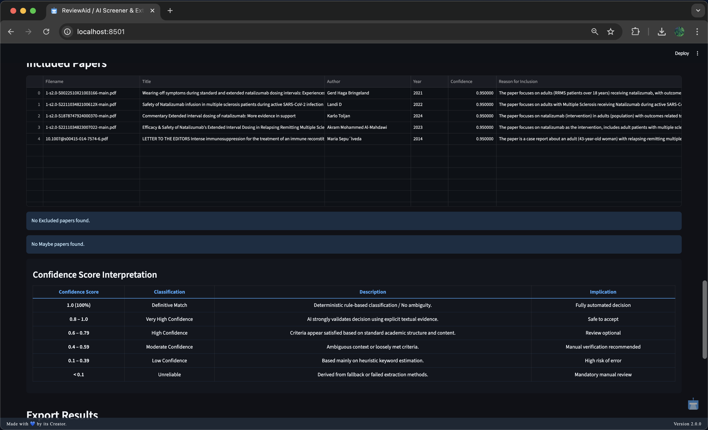
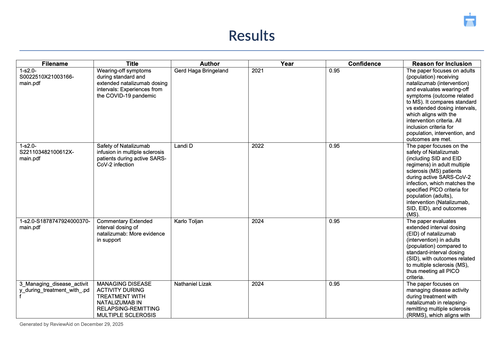
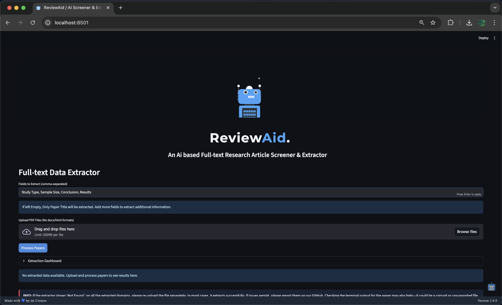
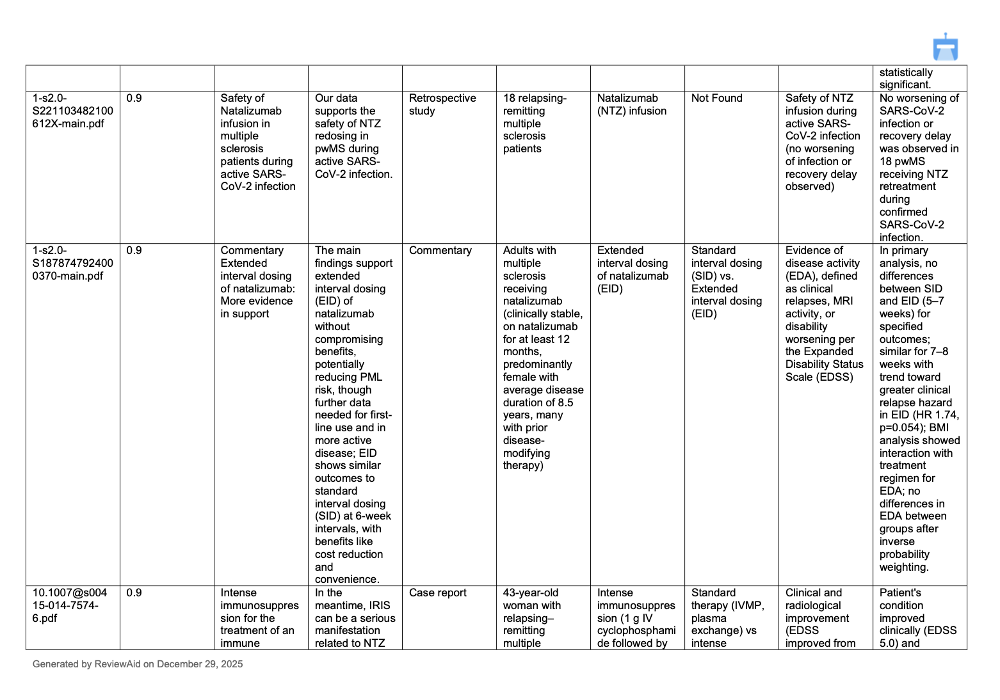

About
ReviewAid is an open-source AI-driven tool designed to streamline full-text screening and data extraction phases of systematic reviews. It leverages advanced large language models to classify papers based on PICO criteria and extract custom data fields, drastically reducing the manual workload for researchers.
Why did I make this?
I built ReviewAid to act as an assistant for Researchers especially those involved in Evidence synthesis. The idea was simple, manual work will be never be replaced but more likely will be aided by this tool. Researchers can manually do the work and then check their accuracy by such a tool so as to not miss any potential important papers. Thus, acting as an "Aid". ReviewAid.
ReviewAid vs. Other Systematic Review Tools
ReviewAid uniquely combines full-text AI screening, customizable extraction, multi-provider LLM configuration, explicit confidence scoring, and local inference in one open-source tool.
| Feature | ReviewAid | Rayyan | Covidence | ASReview |
|---|---|---|---|---|
| AI Full-text PDF Screening | ✅ Yes | ⚠️ AI-assisted | ⚠️ AI-assisted | ❌ Primarily title/abstract |
| Custom AI Data Extraction | ✅ Yes | ✅ Yes | ✅ Yes | ❌ No |
| Multi-LLM Support | ✅ Yes | ❌ No | ❌ No | ❌ No |
| Explicit Confidence Scoring | ✅ Yes | ❌ No equivalent system | ❌ No equivalent system | ❌ No equivalent system |
| Local / Offline AI | ✅ Yes | ❌ No | ❌ No | ✅ Yes |
| Free & Open Source | ✅ Apache 2.0 | ⚠️ Free tier / proprietary | ❌ Proprietary | ✅ MIT |
Interface Previews
User Interface

Screener



Extractor




Additional Views


Citation
If you use ReviewAid in your research, please cite it using the following format:
For ReviewAid's preprint paper, please check ReviewAid MetaArXiV.